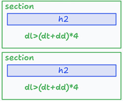

コンテンツを区切るタグ

- コンテンツを区切るsectionタグ：「章・節・項」などひとまとまりを示す
- コンテンツを区切るarticleタグ：独立したコンテンツのかたまりを示す（基本的には、ブログのような記事のかたまりに使用します）
section
- 文章やコンテンツなどひとまとまりになるものに使用します
- 囲んだ要素が「章・節・項」などであることを示します
- h2タグを含むことが推奨されています
<section> <h2>タイトル</h2> <p>テキストが入ります。</p> </section> <section> <h2>タイトル</h2> <p>テキストが入ります。</p> </section>
article
- サイト内で自己完結した、独立しているコンテンツの要素に対して使用します
- articleには「記事・論説」という意味があります
< article > <h2>タイトル</h2> <p>テキストが入ります。</p> </article > < article > <h2>タイトル</h2> <p>テキストが入ります。</p> </article >
sectionとarticleの違い
- sectionタグを使用することで、sectionタグで囲った部分が文章のまとまりであることを明確に示すことができます
- articleタグは、例えばブログ記事のような独立したコンテンツに対して使用されます
グループ化のためのタグ
divタグ
- 「div」は、「division（ディビジョン）」の略
- 文書構造としての特別な意味はなく、要素をグループ化する際に使用します
- レイアウト用のタグとしては、最も使用頻度の高いタグです
<div> <p>あいうえお</p> <p>かきくけこ</p> </div>
spanタグ
- 「span」タグは、divタグと同様に特別な意味はなく、要素を選択する際に使用します
<span>あいうえお</span> <span>かきくけこ</span>